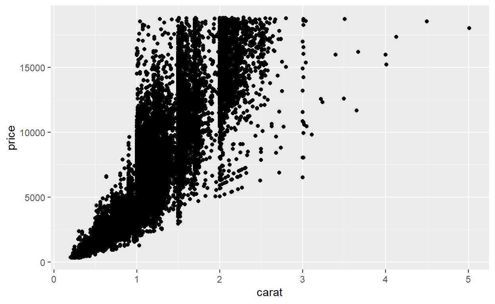

Introduction
Learning Objectives
Attendees should be able to:
- Use basic R operator syntax and access R packages
- Understand the layout of the RStudio integrated development environment (IDE)
- Make simple data visualisations with ggplot2
Course Philosophy
- Scheduling around other responsibilities can be difficult. I want to maintaining compatibility with the current Python club format. Consequently, I will talk for less than 30 mins talking each session to run through the material, then allowing time for Q&A and most importantly practising writing code.
- I will point to further resources as we go. Many of these are very good resources indeed. You can teach yourself R for free using online resources only. I encourage you to look at these resources where you want more detail on a particular area.
- I will assume no familiarity with R, but will try to take into account people“s background and interests. If you”re starting from scratch sessions should not overwhelm you.
- Each session should allow attendees to come away having learnt how to at least one R skill, maintaining the motivation to learn. I don“t want to spend each session covering 20% of a particular skill, meaning you”ve got to come to 5 sessions to get something out. I will try to include at least one “motivating” topic each session, smuggling in the boring but necessary stuff as we go.
- I strongly encourage attendees to practice with R outside of Python Club “in the day job”. We will aim to cover things that you can use accordingly. I want to show you enough for you to teach yourself, not show you everything.
You can access these tutorial notes after the session for reference and self-directed learning, and also share these within NICE if desired. Sessions will (very) roughly follow the NHS-R network"s introduction to R course, and the R for Data Science book by Wickham and Grolemond (https://r4ds.had.co.nz/).
Basic R
Basic Operators
R has the standard mathematical operators, just like python:
- “+” is addition
- “-” is subtraction
- “/” is division
- “*” is multiplication
Comparison operators are also similar:
- “==” is equal to
- “!=” is not equal to
- “>” is greater than
- “<” is less than
- “>=” is greater than or equal to
- “<=” is less than or equal to
As are Logical operators:
- “|” (next to the z key) is the symbol for OR
- “&” is the symbol for AND
- “!” is the symbol for NOT
- TRUE and FALSE (note capitalisation) are boolean true and false
Like python, R comments can be added to lines with “#”
R has an idiosyncratic assignment operator “<-” rather than “=”. The operator “=” will work, but is not generally used and has some issues problems that mean “<-” is generally preferred.
Printing objects can just be done by calling the object, it does not need wrapping in print()
R is quote agnostic, so single quotes work as well as double quotes and the difference is mostly stylistic
R is case-sensitive, so “An_Object” is not the same as “an_object” when writing code
You can try using some basic operators in the box below, which works similarly to a jupyter notebook cell. Try practising a bit of maths or assigning and printing objects, then click the “run code” button (or control-enter) to run the code and return results.
#Try some maths!
2 + 3
5 * 2
5 > 2
2 < 1
#Assign to an object!
an_object <- 42
an_object
#Try some logic!
TRUE & FALSEPackages
R packages are the equivalent of Python libraries, allowing you to use code written by someone else rather than re-invent the wheel. Confusingly, a “library” in R is a collection of packages, so you have your own library comprising the packages you have downloaded. R packages in general use are stored (like base R itself) in the Comprehensive R Archive Network (“CRAN”) and associated mirror sites. Packages on CRAN have some peer-review and quality checks to ensure they are good quality.
To use a package:
- Use the “install.packages()” function, passing the package name in quotes between the brackets. You only have to do this once. Once installed, it will be available and will not need to be installed again unless you want to update it to a new version.
- To access the functions and any data in the package, load it by using the library() function, passing the package name. “library” needs to be called for each R session
R and RStudio
What is RStudio
- It is strongly recommended to work through R exercises using the integrated development environment (IDE) RStudio.
- If you are unfamiliar with IDEs, you can think of R as the “car engine” and RStudio as the “dashboard”. The IDE makes using the language easier and displays information about what is happening.
R makes it go, RStudio makes it easier to drive / code . Image and analogy from https://moderndive.com
- Whilst a handful of other R IDEs exist, none really comes close to RStudio, so it is worthwhile familiarising yourself with it. It"s not like Python where different users may prefer differing IDEs for certain purposes.
- You can write Python in RStudio too, using the ‘reticulate’ package
Getting started with RStudio
R and RStudio have now been installed on the Python Club server. To access the NICE RStudio Server interface, you will need to be set up with a username and password via the ops team. Alternatively you can use a free Rstudio cloud account. The usual caveats apply about not uploading information which should not leave NICE, but these can be used for learning.
Once in, you"ll see the following pane.
Credit: Image from R For Data Science
Go to file / new file / R Script to create your first R file. Save it as something by going to File / Save and naming it to something you like
The default RStudio layout has 4 panes as follows
Source / Editor pane (Top left) - This shows open code scripts + environment variables you“re inspecting. It”s where you"re going to spend most time. Write code in here and you can use autocomplete, syntax highlighting etc.
Console pane (Bottom left) - This is where you can type code to be immediately evaluated, and where source pane code is sent when run.
Output pane (Bottom right) - Has tabs for the file system, plot outputs, loaded packages, and help
Environment / History (Top right) - Tabs for showing what objects you have in the current environment, history, and a few other bits and bobs

Credit: Image from R For Data Science
Visualisations With Ggplot2
Ggplot2
Ggplot2 is a package within the tidyverse. The tidyverse which is a collection of packages for working with “tidy” data. Many of the tidyverse functions replace base R versions with more user-friendly and improved functions, so many R users prefer working with tidyverse versions than base R. This is especially true with visualisation, so graphics in R are usually done with ggplot2 rather than base R.
Why “ggplot2”? The “gg” stands for “grammar of graphics”, which is a theory of visualisation from the book by Leland Wilkinson. The grammar of graphics sets out a common theory and characterisation of graphs and plots which is realised in the ggplot2 package.
Aesthetics and Geoms
The basic form of a ggplot function is structured as follows
ggplot(data = dataset, mapping = aes(x = x_val, y = y_val)) +
geom_point()To construct a ggplot2 graph, we start with the main function “ggplot” and pass the dataset of interest as the first argument. The second argument is the mapping, which relates variables in data to a list of aesthetics specified in the “aes” function. Aesthetics are the fields you wish to include in your plot in some way. The simplest way to do these is mapping them to an axis, setting variables to positions on the x or y axis to show a relationship. This is usually useful where at least one variables of interest is continuous rather than categorical. For categorical data, mapping to an axis can work where another variable is continuous, but sometimes you will be better off using other aesthetics like the the colour, size and shape of data points.
After passing the data and defining the aesthetics, you specify the geom which is the form of the graph. In this case we“ll plot a scatter or dot plot, which ggplot2 defines as a”point" geom. Geoms are added as layers on top of the basic ggplot function, and are linked by “adding” them to the basic function with a “+”.
In addition to geom_point, other geoms that are frequently used include
- geom_bar
- geom_col
- geom_line
- geom_histogram
- geom_density
In addition, there are lots more geoms in ggplot2, plus additional geoms added by other packages that extend ggplot2.
Diamonds dataset
To practice with ggplot2, we“ll use the inbuilt dataframe”diamonds" which is a dataset of almost 54000 diamond prices (in dollars) and their characteristics. After loading the ggplot2, we can view the first few lines of the dataset to see which variables we have
#if you don't have ggplot2 installed you will have to use install.packages("ggplot2")
library(ggplot2)
head(diamonds)typing ?diamonds into the Rstudio console brings up a description of the dataset as follows:
- carat - weight of diamond (equivalent to size when comparing diamonds against each other)
- cut - quality of the cut, from “Fair” to “Ideal”
- color - how transparent the color of the diamond is, from J (worst) to D (best)
- clarity - how imperfect the structure of the diamond is, from I1 (worst) to IF (internally flawless)
- depth - height divided by width
- table - width of top relative to widest point
- price - wholesale price in US dollars
- x, y, z - measurements along 3 axes, in mm
Scatterplot example
Here we start with a basic plot showing a scattergraph of the relationship between price and size of diamond. We tell ggplot the dataset of interest (diamonds), the aesthetics we want variables to map to inside an aes() function (carat on the x axis, price on the y axis). Finally, we add the form of the graph we want (geom_point for a scattergraph) by joining the relevant geom function to the ggplot call with a “+” sign. You can break the line into two as long as you do it after the “+”, so R knows there"s more to come.
ggplot(data = diamonds, mapping = aes(x = carat, y = price)) +
geom_point()
A scattergraph is a nice plot to start with when working with two continuous variables (carats and price) as we can map these to positions on the x and y axes to show relative changes.
Scatter plots are useful forms of exploratory data analysis. We can see
- Not many diamonds end up measured slightly below major increments like 1, 1.5 or 2 carats. Perhaps diamond cutters pick a different cut or cut for weight retention to avoid creating a 0.98 carat diamond.
- The overall relationship of price and weight is exponential - the price jump from 1.5 to 2 carats is a lot more than the gap between 0.5 and 1 carat
- There is a lot of variation in price even at the same weight point, suggesting that prices are affected by more than just size
So how can we investigate this last point further? We could try to add another axis and plot a 3d graph, but 3d graphs are hard to read when printed in two dimensions. A better option for categorical data is normally to change the colour or shape of the dots, which we can do by adding in these as additional aesthetics, including a colour argument in the aesthetic list. Lets try this for clarity to see how this affects price.
ggplot(data = diamonds, mapping = aes(x = carat, y = price, colour = clarity)) +
geom_point()Adding in a colour aesthetic for categorical data is a common means of differentiation, adds to the understanding and also makes the plots look a lot prettier. We can see that prices are highest for internally flawless diamonds, and decline with increased occlusion. Having the continuous variables (carats and price) mapped to the x and y axes shows how these variables relate to each other and also how both are affected by changes to clarity. We can add a final twist by “faceting” the graph, say by colour.
Facets
Faceting splits the graph into smaller individual graphs split by another dimension of interest. Here we are splitting by color, running from D (near colourless) to J (yellowish to the naked eye). Prices are higher where diamonds have least colour.
ggplot(diamonds, aes(x = carat, y = price, colour = clarity)) +
geom_point() +
facet_wrap(~color)Interestingly, cut seems to be less important when we facet by this particular dimension. It appears that you can pick a much better quality cut without affecting the price too much.
ggplot(diamonds, aes(x = carat, y = price, colour = clarity)) +
geom_point() +
facet_wrap(~cut)Practice Questions
Basic R
Packages
ggplot
What are the three elements to a ggplot call?
What do you get if you run the following code? Why?
ggplot(data = diamonds, mapping = aes(x = carat, y = price))- Print the structure of diamonds by running the code below. How many rows and columns does the dataset have? Which columns contain continuous variables? Which contain discrete or categorical variables?
str(diamonds)Which aesthetics are suited for categorical variables like gender or eye colour?
Which sorts of aesthetics are suited for continuous variables like weight and height?
What is the geom for a scatterplot?
Replace the ***** in the code below to create a boxplot of cut vs price
library(tidyverse)
ggplot(data = diamonds, mapping = aes(x = cut, y = price)) +
geom_*****()- Spot the very common coding error in the code below and correct it….
geom(data = diamonds, mapping = aes(x = carat, y = price) +
geom_point()- Run the following code. What is it doing? What happens when there are two geoms being called? Under what scenarios might you want to plot more than one geom in the same plot?
ggplot(data = diamonds, mapping = aes(x = carat, y = price)) +
geom_point() +
geom_smooth()- Run the code below which plots a polynomial regression line between the observed price points of internally flawless (“IF”) diamonds with a colour rating “D”. If you are offered a similar 1ct diamond at $10,000, would this be good value for money?
diamonds %>%
filter(color == "D",
clarity == "IF") %>%
ggplot(mapping = aes(x = carat, y = price)) +
geom_point() +
geom_smooth(method = "lm", formula = y~poly(x,2))- What price would you suggest for a 1.5ct diamond of colour “F” but at the worst possible clarity (“I1”), according to the plot below?
diamonds %>%
filter(color == "F") %>%
ggplot(mapping = aes(x = carat, y = price, color = clarity)) +
geom_point() +
geom_smooth(method = "lm", formula = y~poly(x,2))16-18. Redo questions 6, 11 and 13, but using the RStudio IDE to generate the plots after loading the tidyverse suite. Use the help documentation and your own research to work out how to export the plots and save them to disk. HINT: There“s a lovely looking”export" button in the plots tab in the bottom right pane.
Use RStudio to draw your own graph of any type, using diamonds or another example ggplot2 dataset (the “mpg” dataset works well)
Use the ggplot2 cheat sheet to find a (sensible) alternate geom for your graph from Q19, and plot that.
Further Resources
R help files
Help and syntax for any particular function can be accessed by typing ? plus the function name into the Rstudio console, e.g. ?data.frame. Searches of the help documentation can be run by typing a double question mark followed by the search term, e.g. ??object. Often this can solve specific queries fairly quickly.
General Websites & Mailing lists
- Specific error messages or questions can often be resolved by searching Google or Stack Overflow
- There are lots of Youtube tutorials if you know what you are searching for
- There is also a R specific search engine called R-Seek which narrows down results to R content only
- The NHS-R community website also offers recordings, blogs and other R resources. Their slack channel is useful for queries and R related news
- R-bloggers aggregates R blogs so can be useful to monitor or search for things of interest
- R weekly is a mailing list which gives you up to date developments with all things R
Free online resources for learning R
For general learning, many R resources are freely available online, and often have the advantage of being continually updated. Useful starting points are:
General R / Introduction
- Paul van der Laken has a close to canonical list of R Resources
- R for Data Science by Hadley Wickham, original author of the tidyverse suite and chief Data Scientist at RStudio
- YaRrr! The Pirates Guide to R by Nathaniel Phillips, containing a good introduction to R with additional buccaneering based humour, if you like that sort of thing
- RStudio education pages have a good set of beginner paths and guidance for learning R
- R Cookbook by Winston Chang. Useful Reference Guide for R concepts
- R Studio Cheat Sheets. Particularly ggplot2 and base r cheat sheets. Also available in Rstudio under the help menu/Cheatsheets/Browse Cheatsheets
Visualisation
- ggplot2 Elegant Graphics for Data Analysis by Wickham, Navarro and Pederson. Explains the grammar of graphics and how this is implemented in ggplot2
- R-Charts is a nice repository of charts to demonstrate the possibilities of using R and ggplot2, for inspiration & motivation
- The BBC graphic style rcookbook shows you how the BBC make graphics using R, and how to replicate those graphics
R Programming
- Hands on Programming with R by Garrett Grolemund. More detail on R programming concepts, notation, practical programming
- Advanced R by Hadley Wickham. Useful for those with an existing understanding of programming concepts from other languages, or advanced R users. Not an introductory book.